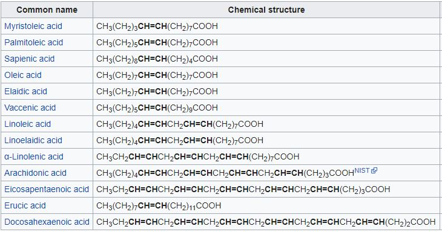

In chemistry, particularly in biochemistry, a fatty acid is a carboxylic acid with a long aliphatic chain which is either saturated or unsaturated. Most naturally occurring fatty acids have an unbranched chain of an even number of carbon atoms, from 4 to 28. Fatty acids are usually derived from triglycerides or phospholipids. Fatty acids are important dietary sources of fuel for animals because when metabolized, they yield large quantities of ATP. Many cell types can use either glucose or fatty acids for this purpose.
Saturated fatty acids have no double bonds. Thus, saturated fatty acids are saturated with hydrogen (since double bonds reduce the number of hydrogens on each carbon). Because saturated fatty acids have only single bonds, each carbon atom within the chain has 2 hydrogen atoms (except for the omega carbon at the end that has 3 hydrogens).
Unsaturated fatty acids have one or more double bonds between carbon atoms. (Pairs of carbon atoms connected by double bonds can be saturated by adding hydrogen atoms to them, converting the double bonds to single bonds. Therefore, the double bonds are called unsaturated.) 
Fatty acids that are required by the human body but cannot be made in sufficient quantity from other substrates, and therefore must be obtained from food, are called essential fatty acids. There are two series of essential fatty acids: one has a double bond three carbon atoms away from the methyl end; the other has a double bond six carbon atoms away from the methyl end. Humans lack the ability to introduce double bonds in fatty acids beyond carbons 9 and 10, as counted from the carboxylic acid side.[14] Two essential fatty acids are linoleic acid (LA) and alpha-linolenic acid (ALA). These fatty acids are widely distributed in plant oils. The human body has a limited ability to convert ALA into the longer-chain omega-3 fatty acids — eicosapentaenoic acid (EPA) and docosahexaenoic acid (DHA), which can also be obtained from fish. Omega-3 and omega-6 fatty acids are biosynthetic precursors to endocannabinoids with antinociceptive, anxiolytic, and neurogenic properties
Created by : Aldi Rizky Fauzi